Of Curves and Hands
What happens when a ritual traditionally performed by hand is translated through a machine?
Of Curves and Hands is an interactive installation that reinterprets the South Indian practice of
kolam-making through gesture tracking, computation, and mechanical drawing.
Visitors use their hands to create patterns, which are translated into physical drawings by a series of
plotters. The machines draw, erase, then begin again, leaving a temporary record of the interaction between
human movement and machine logic.
The project is part of my ongoing research, Anatomy of a
Kolam→, which explores the relationship between cultural practices, computation, and
embodied interaction.
interactive installation,
physical computing,
cultural research
2026
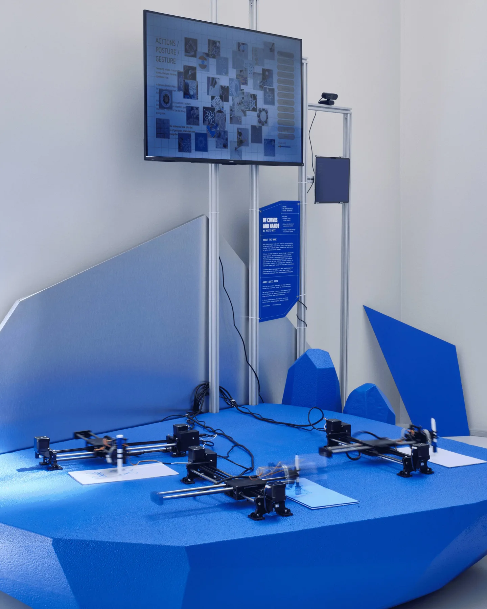
IT STARTED WITH A KOLAM
Kolams are geometric drawings traditionally made outside homes in South India, often using rice flour. They're a
familiar part of everyday life, drawn and redrawn as part of a daily ritual.
Kolams interest me because of the knowledge held in the act of making one: the movement of the hand, the rhythm
of drawing, and the care involved in making something that will eventually disappear.
Many kolams follow geometric rules built from dot grids and continuous symmetrical lines.
That relationship between mathematical structure and embodied knowledge became the starting point for my
research.
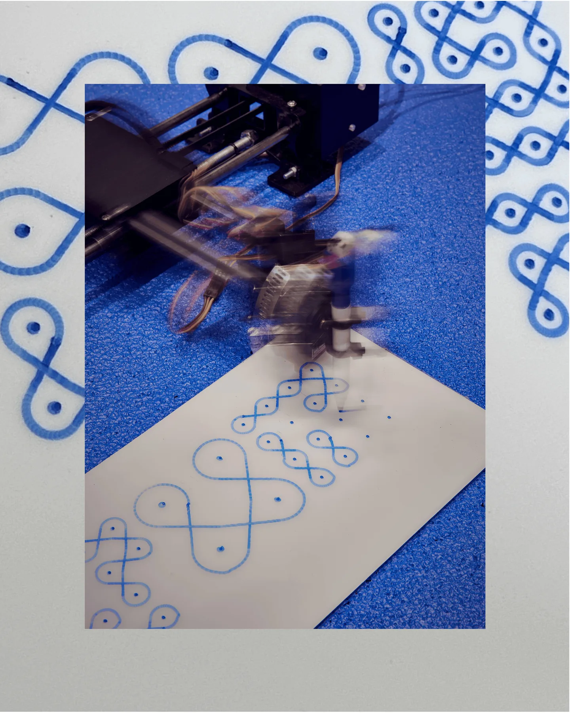
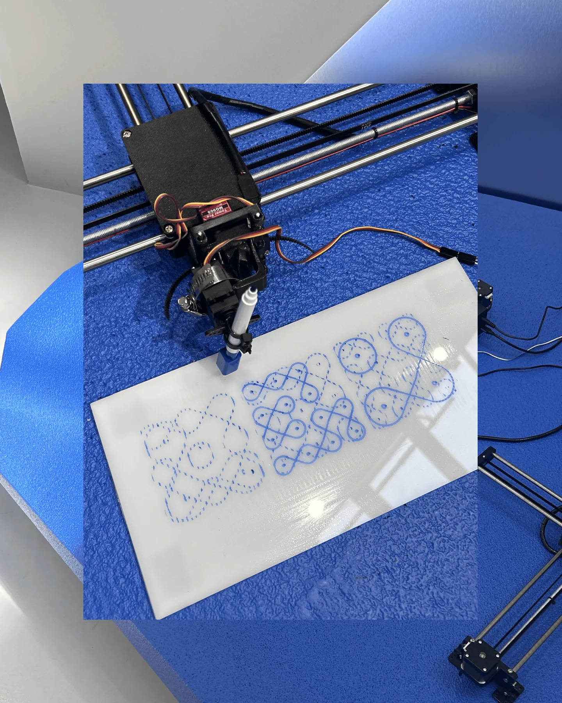
ANATOMY OF A KOLAM
I started Anatomy of a Kolam as an ongoing exploration of how traditional practices might be interpreted
through computational systems.
At first, I was interested in understanding the underlying logic of kolam patterns and how they could be
generated through code.
Over time, my attention moved toward everything that existed beyond the geometry.
Once I could reproduce a kolam's geometry in code, the harder questions moved toward gesture. What happens to
the small variations that emerge from individual hands? What changes when the person making the drawing no longer
directly touches the drawing surface?
These questions eventually led me towards experimenting with physical computing and tangible interactions.
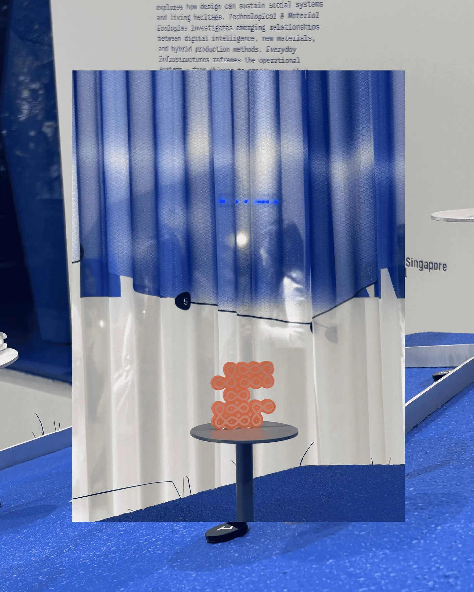
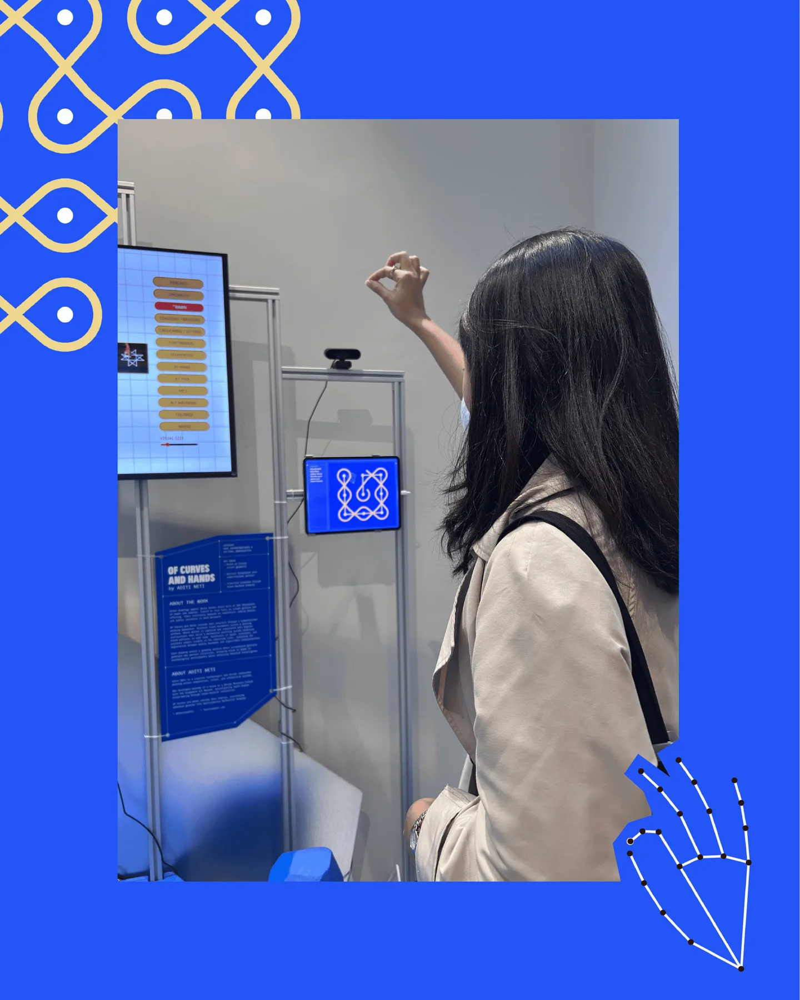
FROM HAND TO MACHINE
For Of Curves and Hands, I wanted the human hand to remain central to the experience.
The installation uses hand tracking to capture visitors' movements, which are processed through a computational
system and translated into drawings by mechanical plotters.
I wanted people to have a role in making the pattern, with the finished drawing emerging from their movements.
The interaction is a negotiation between the person and the machine. The person initiates the movement, the code
interprets it, and the machine gives it physical form.
I was particularly interested in the little differences that emerge through this process. No two people move
quite the same way, and translating those gestures through a machine introduces another layer of interpretation.
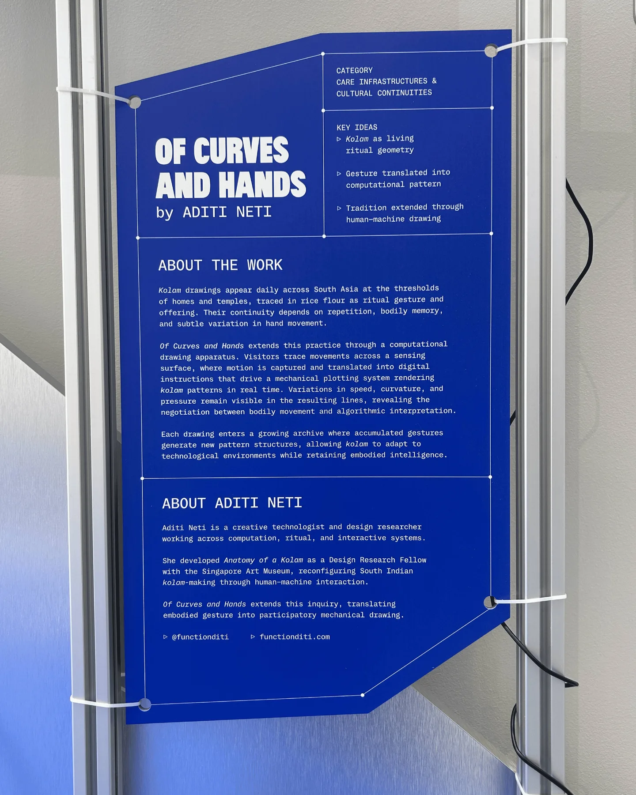
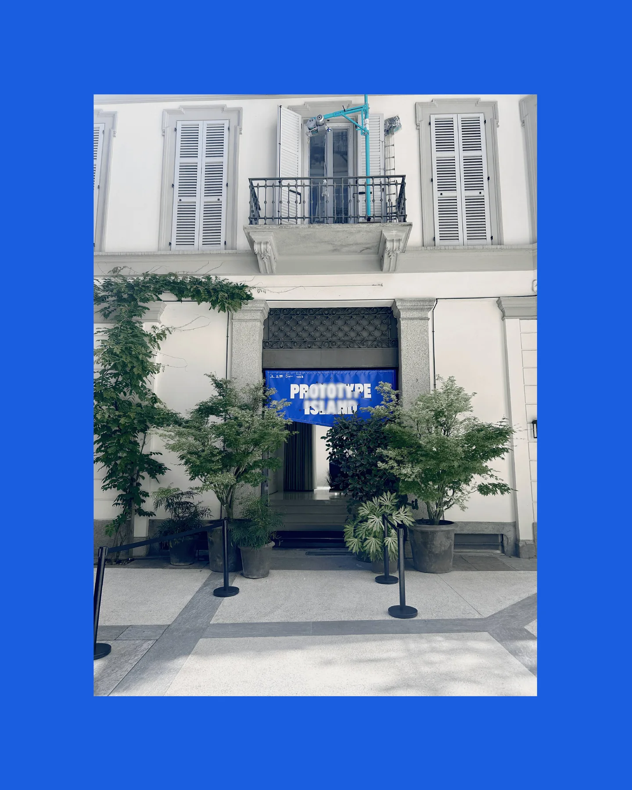
DRAWING, ERASING, REPEATING
One of the qualities of traditional kolams that I wanted to retain was their impermanence.
Kolams are often drawn for a day, sometimes only for a few hours. They are walked over, disturbed by the
environment, and eventually drawn again.
The installation reflects this through a cycle of drawing and erasure. Patterns emerge through visitors'
movements, exist for a while, and then disappear to make room for new ones.
This became an important part of the work. I wanted the technology to carry some of the ritual's temporary and
repetitive nature, keeping the pattern in motion as a living cycle.
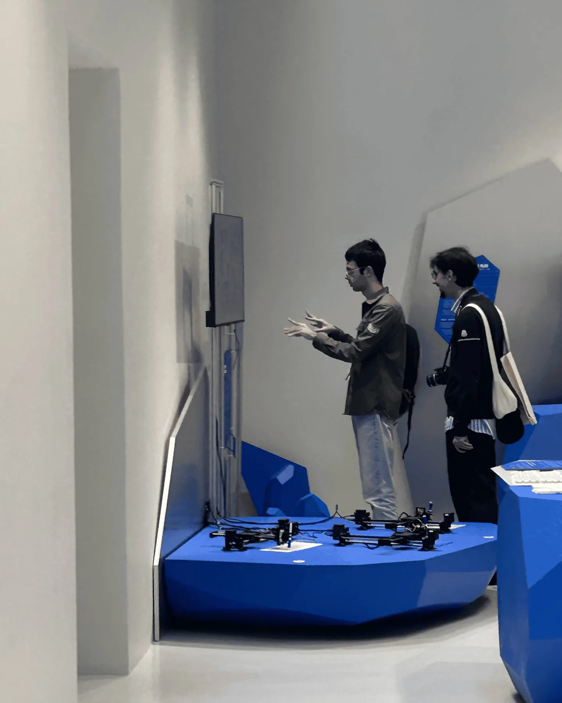
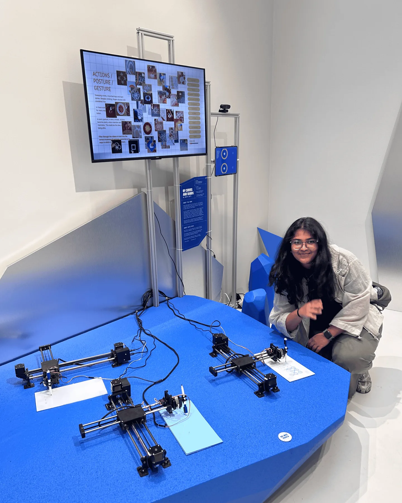
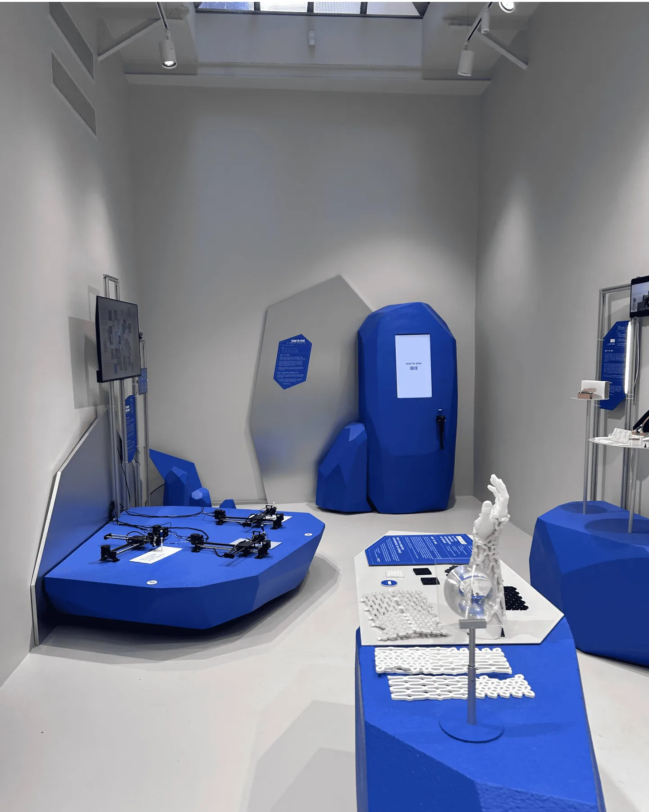
MANY HANDS, MANY TRACES
The project was exhibited at Prototype Island, presented by DesignSingapore Council during Milan Design
Week 2026.
Visitors were invited to interact with the installation using their hands, regardless of whether they had any
prior experience with kolam-making.
Each interaction introduced different movements, speeds, and ways of approaching the interface.
What interested me was the way a shared system could produce such varied outcomes. The machine kept the same
rules; each visitor brought a different pace and sense of direction.
The installation let kolam-making become a participatory experience, shaped by visual pattern, computation, and
the presence of other people.
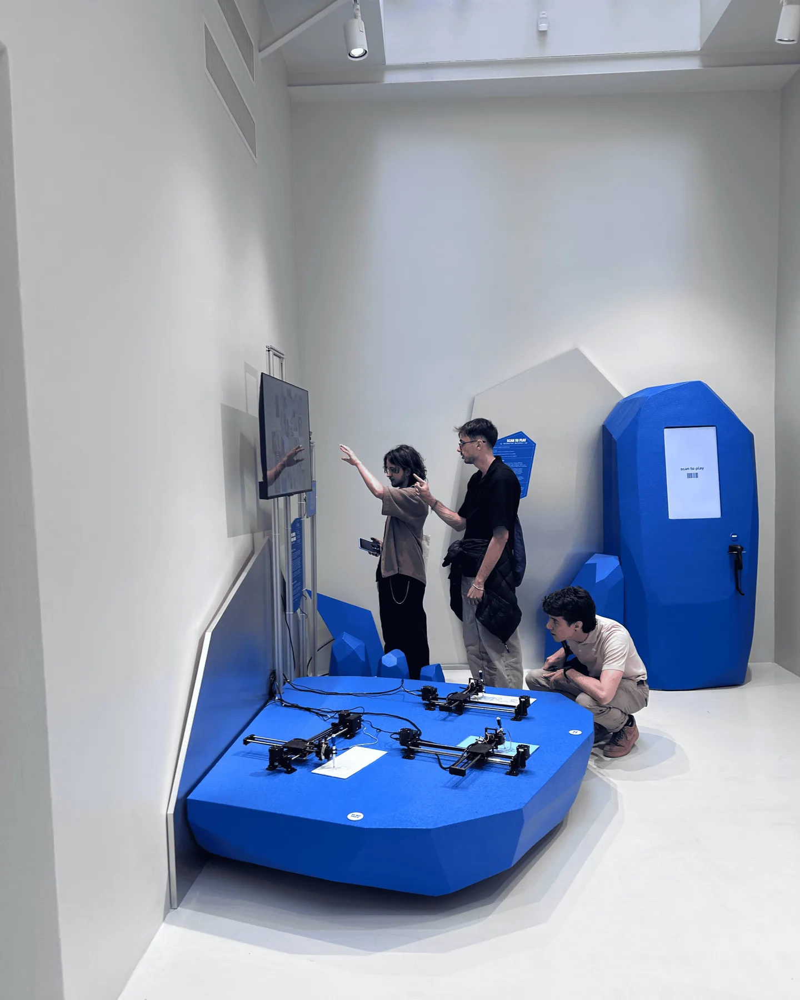
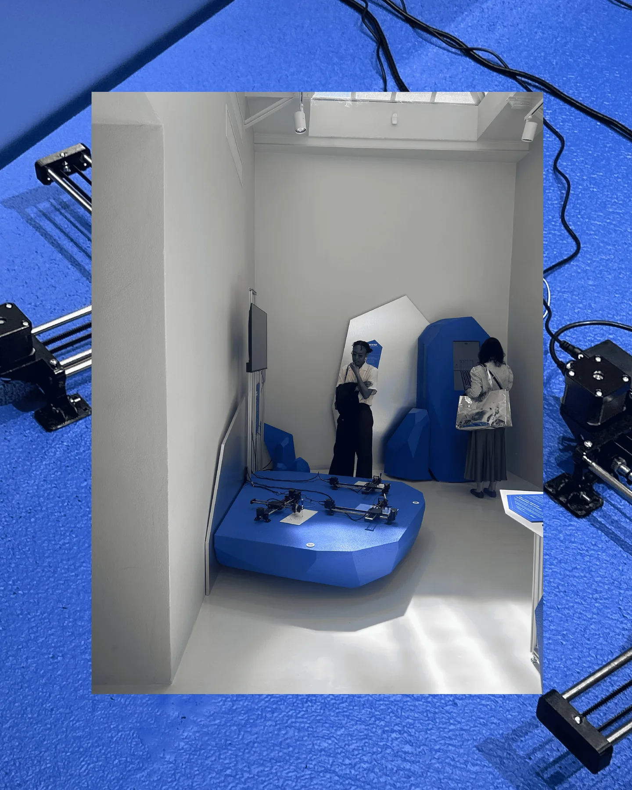
AN ONGOING EXPLORATION
Of Curves and Hands is one iteration within the continuing research of Anatomy of a Kolam→.
I'm still interested in what happens when practices rooted in the body are mediated by computational tools,
particularly the relationship between human agency, cultural knowledge, and machine interpretation.
The project keeps the traditional practice of kolam-making in view while testing what becomes possible when
different ways of making meet.
functionditi@gmail.com
© Aditi Neti 2026